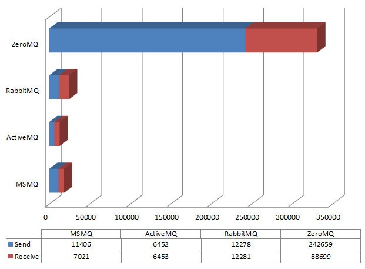

貌似有2个月没写技术帖了。今天，向各位程序猿同学介绍一个和网络通讯有关的开源项目——ZeroMQ（绰号 ØMQ，以下简称 ZMQ）。事先声明，本帖仅仅是【简介】，不涉及太深入的话题。
通俗地说，ZMQ 是一个开源的、跨语言的、非常简洁的、非常高性能、非常灵活的网络通讯库。
它的官方网站在“这里"，维基百科的介绍在"这里”。
这玩意儿推出的时间不长，貌似2009年下半年才推出1.0.1版本。截止俺写本文的时候，尚无中文维基的条目。
俺去年开始接触它，感觉实在不错，今年就已经用于公司的产品中。最近一段时间，对 ZMQ 的好评日渐增多，所以俺也来赶赶潮流，在自己的博客里忽悠一下。
接下来，就针对 ZMQ 的几大特点，分别聊一聊。
ZMQ 的首要特点，就是简单（从它的名字也能感觉得到）。
相比原始的 socket API，ZMQ 封装掉了很多东西，免去了开发人员的很多麻烦。
比如，传统的 TCP 是基于字节流进行收发，因此程序猿常常要自己去处理数据块与数据块之间的边界（断界处理）；与之相对，ZMQ 是以消息为单位进行收发，它确保你每次发出／收到的，都是一个消息块。这样一来，就省却了不少代码量。
比如，基于 socket API 进行 TCP 通讯，你需要自己处理很多网络异常（比如连接异常中断以及重连），即使有经验的程序员，也未必能写得严密。而在 ZMQ 中，这些琐事统统不用程序猿操心。
再比如，用传统的 socket API，当你想提高通讯性能，往往要搞些异步（非阻塞）、缓冲区、多线程之类的把戏。而这些东西，ZMQ 也帮你封装掉了。
总而言之，ZMQ 对很多底层细节的封装，让你的网络程序代码变得简单，写起来又快又轻松。
ZMQ 的 API 接口很少，而且在风格上非常类似于 BSD Socket。如果你曾经用 socket API 写过程序，那要上手 ZMQ 是非常容易的。如果你是 Java 程序猿，搞过 JMS API（比如 ActiveMQ），那你会发觉两者的 API 简直是天壤之别。顺便抱怨一下：Java 的 JMS API，那可真是复杂啊！
为了增加说服力，下面给出 Python 语言实现的 Echo Server 代码。
（注：所谓的“Echo Server”是一种最简单的服务端程序——它把收到的信息原样回送给客户端程序）
服务端程序
客户端端程序
从上述示例代码，大伙儿应该能感觉到：ZMQ 的使用，是非常简单的。
所谓的灵活性，主要指如下2方面。
ZMQ 可以灵活地支持多种通讯环境（进程内，主机内跨进程、跨主机）。ZMQ 的 API 设计得很好，以至于你的代码只要做很小的改动（甚至不改动），就可以适用于不同的通讯环境。
在刚才的例子里，有这样的语句：
上述代码中的
ZMQ将常见的通讯场景进行了归纳，总结了如下几种不同的模式。
为啥俺要强调跨语言的特色捏？通常来说，用得着网络通讯库的软件系统，某种程度上都算是分布式系统。如果开发的分布式系统比较复杂，要想用一种编程语言通吃，难度较大。因此，在稍微复杂的分布式系统中，采用多种编程语言是常有的事儿（至少俺的经历是如此）。所以，ZMQ 的这个跨语言特色就显得非常重要了。
在官方网站的文档中，给出了如下许多编程语言的示例（链接在“这里”）。为避免引发编程语言的名次之争，以下按照字母序排列。
说到性能，这可是 ZMQ 吹嘘的主要亮点。首先，ZMQ 是用 C/C++ 开发的（C/C++的性能，那可是公认滴）；其次，ZMQ 本身的协议格式定义得很简洁（相对来说，JMS 规范中的协议格式就复杂多了）。所以，它的性能远远高于其它的消息队列软件。甚至可以说，用 ZMQ 的性能，跟用传统 socket API 的性能，是不相上下滴。
为了让大伙儿有一个感性的认识，俺特地找来了消息队列软件的性能测评。这是某老外写的一篇帖子（在“这里”），不懂洋文的同学可以看"这里"。连帖子都懒得看的同学，可以直接看下图。

（ZMQ、RabbitMQ、ActiveMQ、MSMQ 性能对比）
从图中可以明显看出，ZMQ 相比其它几款 MQ（消息队列），简直是鹤立鸡群啊！性能根本不在一个档次嘛。
总体而言，ZMQ 是非常值得大伙儿去尝试的一个网络通讯库。即使工作中用不到，业余时间玩玩也是不错滴。
本帖子发出后，如果感兴趣的人较多，俺会根据反馈，再聊一些深入的话题。
俺博客上，和本文相关的帖子（需翻墙）：
《计算机网络通讯的【系统性】扫盲——从“基本概念”到“OSI 模型”》
《架构设计：生产者/消费者模式》（系列）
《开源点评：Protocol Buffers 介绍》
《开源点评：cURL——优秀的应用层网络协议库》
《澄清“自由软件、开源软件”相关概念及许可证的误解》
《如何选择开源项目》
★ZMQ 是啥玩意儿？
通俗地说，ZMQ 是一个开源的、跨语言的、非常简洁的、非常高性能、非常灵活的网络通讯库。
它的官方网站在“这里"，维基百科的介绍在"这里”。
这玩意儿推出的时间不长，貌似2009年下半年才推出1.0.1版本。截止俺写本文的时候，尚无中文维基的条目。
俺去年开始接触它，感觉实在不错，今年就已经用于公司的产品中。最近一段时间，对 ZMQ 的好评日渐增多，所以俺也来赶赶潮流，在自己的博客里忽悠一下。
接下来，就针对 ZMQ 的几大特点，分别聊一聊。
★简单
ZMQ 的首要特点，就是简单（从它的名字也能感觉得到）。
◇封装导致的简单
相比原始的 socket API，ZMQ 封装掉了很多东西，免去了开发人员的很多麻烦。
比如，传统的 TCP 是基于字节流进行收发，因此程序猿常常要自己去处理数据块与数据块之间的边界（断界处理）；与之相对，ZMQ 是以消息为单位进行收发，它确保你每次发出／收到的，都是一个消息块。这样一来，就省却了不少代码量。
比如，基于 socket API 进行 TCP 通讯，你需要自己处理很多网络异常（比如连接异常中断以及重连），即使有经验的程序员，也未必能写得严密。而在 ZMQ 中，这些琐事统统不用程序猿操心。
再比如，用传统的 socket API，当你想提高通讯性能，往往要搞些异步（非阻塞）、缓冲区、多线程之类的把戏。而这些东西，ZMQ 也帮你封装掉了。
总而言之，ZMQ 对很多底层细节的封装，让你的网络程序代码变得简单，写起来又快又轻松。
◇设计很简洁的 API
ZMQ 的 API 接口很少，而且在风格上非常类似于 BSD Socket。如果你曾经用 socket API 写过程序，那要上手 ZMQ 是非常容易的。如果你是 Java 程序猿，搞过 JMS API（比如 ActiveMQ），那你会发觉两者的 API 简直是天壤之别。顺便抱怨一下：Java 的 JMS API，那可真是复杂啊！
◇具体的示例
为了增加说服力，下面给出 Python 语言实现的 Echo Server 代码。
（注：所谓的“Echo Server”是一种最简单的服务端程序——它把收到的信息原样回送给客户端程序）
服务端程序
import zmq context = zmq.Context() socket = context.socket(zmq.REP) socket.bind("tcp://127.0.0.1:1234") while True : msg = socket.recv() socket.send(msg)
客户端端程序
import zmq context = zmq.Context() socket = context.socket(zmq.REQ) socket.connect("tcp://127.0.0.1:1234") msg_send = "xxx" socket.send(msg_send) print(msg_send) msg_recv = socket.recv() print(msg_recv)
从上述示例代码，大伙儿应该能感觉到：ZMQ 的使用，是非常简单的。
★灵活
所谓的灵活性，主要指如下2方面。
◇适用于多种通讯环境
ZMQ 可以灵活地支持多种通讯环境（进程内，主机内跨进程、跨主机）。ZMQ 的 API 设计得很好，以至于你的代码只要做很小的改动（甚至不改动），就可以适用于不同的通讯环境。
在刚才的例子里，有这样的语句：
socket.connect("tcp://127.0.0.1:1234")
上述代码中的
tcp://127.0.0.1:1234 是表示通讯对端的地址串。ZMQ 规定地址串使用格式 transport://endpoint 表示。其中的 transport 表示通讯的类型，目前支持如下4种：inproc（进程内） ipc（主机内跨进程） tcp（跨主机） pgm（跨主机，支持多播）对程序猿来说，如果你把通讯的地址串保存到配置文件中，就完全可以用一套代码来搞定多种通讯方式，非常爽！
◇支持多种通讯模式
ZMQ将常见的通讯场景进行了归纳，总结了如下几种不同的模式。
PUB ＆ SUB REQ ＆ REP REQ ＆ ROUTER DEALER ＆ REP DEALER ＆ ROUTER DEALER ＆ DEALER ROUTER ＆ ROUTER PUSH ＆ PULL PAIR ＆ PAIR限于篇幅，俺就不深入介绍每种模式了，有兴趣的同学请看官方文档（在“这里”）。
★跨语言
为啥俺要强调跨语言的特色捏？通常来说，用得着网络通讯库的软件系统，某种程度上都算是分布式系统。如果开发的分布式系统比较复杂，要想用一种编程语言通吃，难度较大。因此，在稍微复杂的分布式系统中，采用多种编程语言是常有的事儿（至少俺的经历是如此）。所以，ZMQ 的这个跨语言特色就显得非常重要了。
在官方网站的文档中，给出了如下许多编程语言的示例（链接在“这里”）。为避免引发编程语言的名次之争，以下按照字母序排列。
Ada, Basic, C#, C, C++, Common Lisp, Erlang, Go, Haskell, Haxe, Java, JavaScript(Node.js), Lua, Objective-C, PHP, Perl, Python, Racket, Ruby, Scala这个语言清单实在太全了，居然有2个语言，俺都没听说过。可以不夸张地说——常用的编程语言，都可以找到相应的 ZMQ 封装库。
★高性能
说到性能，这可是 ZMQ 吹嘘的主要亮点。首先，ZMQ 是用 C/C++ 开发的（C/C++的性能，那可是公认滴）；其次，ZMQ 本身的协议格式定义得很简洁（相对来说，JMS 规范中的协议格式就复杂多了）。所以，它的性能远远高于其它的消息队列软件。甚至可以说，用 ZMQ 的性能，跟用传统 socket API 的性能，是不相上下滴。
为了让大伙儿有一个感性的认识，俺特地找来了消息队列软件的性能测评。这是某老外写的一篇帖子（在“这里”），不懂洋文的同学可以看"这里"。连帖子都懒得看的同学，可以直接看下图。
（ZMQ、RabbitMQ、ActiveMQ、MSMQ 性能对比）
从图中可以明显看出，ZMQ 相比其它几款 MQ（消息队列），简直是鹤立鸡群啊！性能根本不在一个档次嘛。
★总结
总体而言，ZMQ 是非常值得大伙儿去尝试的一个网络通讯库。即使工作中用不到，业余时间玩玩也是不错滴。
本帖子发出后，如果感兴趣的人较多，俺会根据反馈，再聊一些深入的话题。
俺博客上，和本文相关的帖子（需翻墙）：
《计算机网络通讯的【系统性】扫盲——从“基本概念”到“OSI 模型”》
《架构设计：生产者/消费者模式》（系列）
《开源点评：Protocol Buffers 介绍》
《开源点评：cURL——优秀的应用层网络协议库》
《澄清“自由软件、开源软件”相关概念及许可证的误解》
《如何选择开源项目》
版权声明
本博客所有的原创文章，作者皆保留版权。转载必须包含本声明，保持本文完整，并以超链接形式注明作者编程随想和本文原始地址：
https://program-think.blogspot.com/2011/08/opensource-review-zeromq.html
本博客所有的原创文章，作者皆保留版权。转载必须包含本声明，保持本文完整，并以超链接形式注明作者编程随想和本文原始地址：
https://program-think.blogspot.com/2011/08/opensource-review-zeromq.html